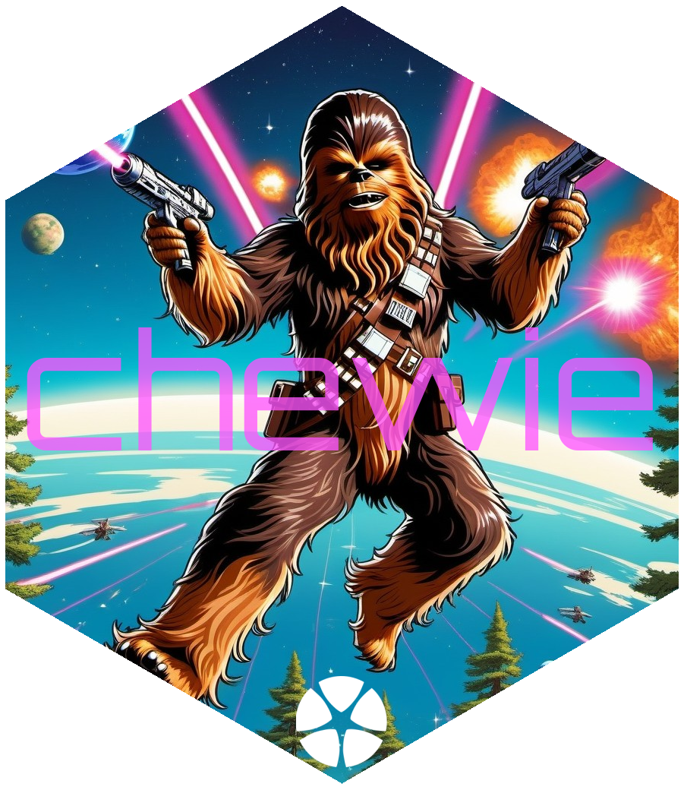
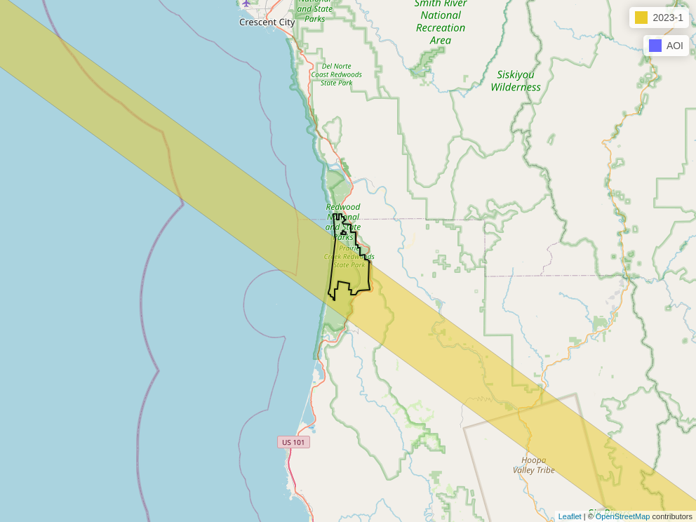
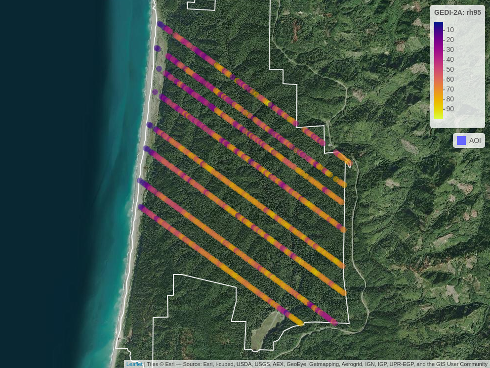

The goal of chewie is to make downloading GEDI data as simple as possible. This includes the point-level products: 1B, 2A, 2B and 4A. Here is a quick summary of design choices that enables {chewie} to achieve this:
Data are downloaded and converted to parquet files which can then be read using {arrow} and converted to sf objects. This approach is performative as it only requires each entire granule to be loaded into memory once (when it is converted from hdf5 to parquet). From here on we can use dplyr verbs (or base R) to
filter,mutateandselectdata as required without needing to load all shots, from a given granule, into memory.A system-level cache is used to store the data. This means that once a file has been downloaded it will not be downloaded again even if working in a different project (it is also possible to specify a unique cache location for each project).
There is support for spatial filtering of granules that intersect an area of interest and not only by a bounding box; this frequently reduces the amount of irrelevant data that is downloaded.
Installation
You can install the development version of chewie like so:
# install.packages("pak")
pak::pkg_install("Permian-Global-Research/chewie")Example
First, let’s load in some libraries. {dplyr} isn’t essential but it is recommended as it’s an excellent and highly performative option for working with arrow datasets.
Here are some useful helper functions to set up your credentials (using chewie_creds()) and check that those credentials and the cache are set up correctly (using chewie_health_check()). By default the cache is set up in the .chewie folder in your home directory. You can change this by running chewie_cache_set().
chewie_creds() # to set up your credentials
chewie_health_check() # to check your credentials and cache setup.Now, let’s search for GEDI 2A data that intersects with the Prairie Creek Redwoods State Park, California (the dataset is included with the package). We then plot the footprints of the granules that intersect with this area to check out what we’ve got. Note that by default, both find_gedi and grab_gedi cache their outputs so, when these functions are re-run, the data will be loaded from the cache rather than downloaded again, even in a different R session.
prairie_creek <- sf::read_sf(system.file(
"geojson", "prairie-creek.geojson",
package = "chewie"
))
gedi_2a_search <- x <- find_gedi(prairie_creek,
gedi_product = "2A",
date_start = "2023-01-01",
date_end = "2023-01-31"
)
#> ✔ Using cached GEDI find result
print(gedi_2a_search)
#>
#> ── chewie.find ───────────────────────────────────────────────────────────────────────────────────────────────────────────────────
#> • GEDI-2A
#> id time_start time_end url cached
#> <char> <POSc> <POSc> <char> <lgcl>
#> 1: G2754665065-LPCLOUD 2023-01-25 05:14:31 2023-01-25 06:47:21 https://data.lpdaac.earthdatacloud.nasa.gov/lp-pro... TRUE
#> 1 variable(s) not shown: [geometry <sfc_POLYGON>]
#>
#> ──────────────────────────────────────────────────────────────────────────────────────────────────────────────────────────────────Whilst there is a plot method for chewie.find objects, a great alternative is to plot a leaflet map with chewie_show, which can be static or interactive (this uses the fantastic {mapview} under the hood).
chewie_show(
gedi_2a_search,
zoom = 8
)
Now we use grab_gedi to download the data - this function internally, converts the data to parquet format and stores it in the cache. The returned value is an arrow_dplyr_query object. We can then use {dplyr} verbs to filter/select the data as we wish before finally using collect_gedi to convert the data to a sf object. If no filtering/selection is carried out then collect_gedi will return all the available columns/rows for the AOI.
gedi_2a_sf <- grab_gedi(gedi_2a_search) |>
filter(
quality_flag == 1,
degrade_flag == 0
) |>
select(
beam, date_time, lat_lowestmode, lon_lowestmode, elev_highestreturn,
elev_lowestmode, rh0, rh25, rh50, rh75, rh95, rh100
) |>
collect_gedi(gedi_find = gedi_2a_search)
#> ✔ All data found in cache
print(gedi_2a_sf)
#> Simple feature collection with 884 features and 10 fields
#> Geometry type: POINT
#> Dimension: XY
#> Bounding box: xmin: -124.069 ymin: 41.3609 xmax: -123.9959 ymax: 41.43904
#> Geodetic CRS: WGS 84
#> # A tibble: 884 × 11
#> beam date_time elev_highestreturn elev_lowestmode rh0 rh25
#> * <int> <dttm> <dbl> <dbl> <dbl> <dbl>
#> 1 0 2023-01-25 06:09:05 -19.6 -23.8 -3.55 -1.12
#> 2 0 2023-01-25 06:09:05 -20.7 -24.2 -3.89 -1.27
#> 3 0 2023-01-25 06:09:05 -20.7 -24.2 -3.93 -1.27
#> 4 0 2023-01-25 06:09:05 -2.29 -23.3 -3.37 -0.0300
#> 5 0 2023-01-25 06:09:05 27.7 -15.0 -2.54 9.70
#> 6 0 2023-01-25 06:09:05 35.8 4.55 -3.74 12.1
#> 7 0 2023-01-25 06:09:05 55.9 12.2 -1.57 16.8
#> 8 0 2023-01-25 06:09:05 94.6 41.0 -1.53 25.8
#> 9 0 2023-01-25 06:09:05 95.3 42.5 -3.78 6.06
#> 10 0 2023-01-25 06:09:05 98.3 33.8 -2.32 29.9
#> # ℹ 874 more rows
#> # ℹ 5 more variables: rh50 <dbl>, rh75 <dbl>, rh95 <dbl>, rh100 <dbl>,
#> # geometry <POINT [°]>Finally, we can plot the data. Again we can use the generic chewie_show function.
chewie_show(
gedi_2a_sf,
zcol = "rh95",
zoom = 13,
alpha = 0.5,
aoi_color = "white"
)
Other relevant packages/software
{rGEDI} provides the ability download GEDI data but also a great deal of additional functionality for visualisation, post-processing and modelling.
{GEDI4R} which similarly provides a suit of tools for downloading, visualising and modelling GEDI data, but with a focus on the 4A product.
pyGEDI is a Python package for downloading and visualising GEDI data.
GEDI-Data-Resources is a collection of scripts for both python and R that provide examples of how to download and process GEDI data.
These resources have been a great source of inspiration for {chewie}; we would like to thank the authors for their great work!